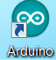
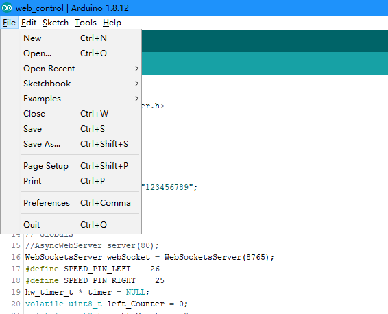
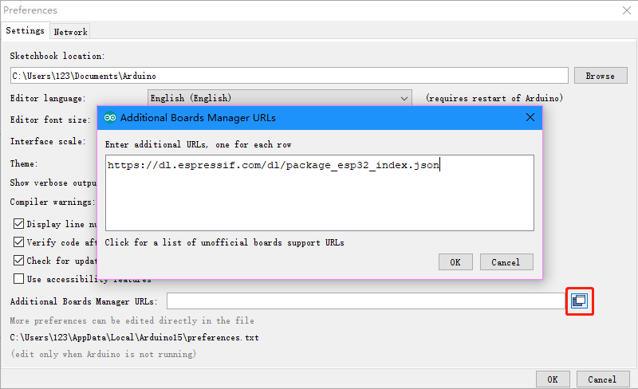
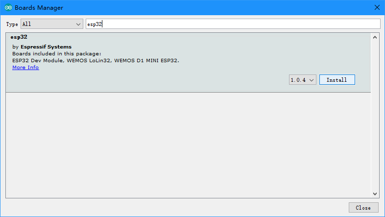
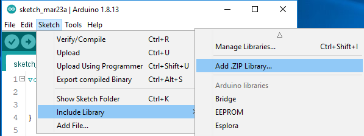
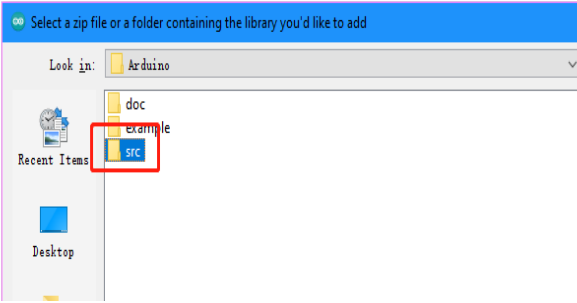
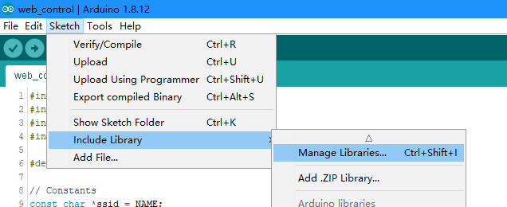
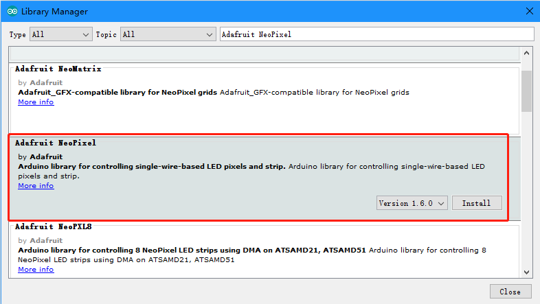

软件配置和安装¶
Before you start using the kit, you need to complete the following steps.
Download the Files¶
Go to https://github.com/sunfounder/esp-4wd download the ZIP files.Unzip the downloaded ZIP file and you will get the esp-4wd (esp-4wd-master) folder.

{kind=link}
Import Sunfounder Remote Control Supporter¶
Open the arduino.
{kind=link}
Click File -> Preferences.
{kind=link}
In the Preferences interface, click the UPLOAD icon, and type in this URL, https://dl.espressif.com/dl/package_esp32_index.json, click OK.
{kind=link}
Install ESP32 board¶
Click Tools -> Board -> Boards Manager. Search esp32, click Install.
{kind=link}
If you do not install the esp32 development board library, you will not be able to download the code to the ESP-4WD Car.
Include library¶
Include src¶
Click Sketch -> Include Library -> Add .ZIP Library.
{kind=link}
Choose esp-4wd -> Arduino -> src, you can call the functions in this library to write code to control ESP-4WD Car.
{kind=link}
Include Adafruit NeoPixel¶
Click Sketch -> Include Library -> Manage Libraries.
{kind=link}
search Adafruit NeoPixel, find it in the drop-down options, click Install. When using RGB lights, you need to call the functions in this library.
{kind=link}
{kind=link}
{kind=link}
Install driver¶
Connect ESP32 RDP to PC.

Check your serial port information, right-click the “This PC” icon, Click Properties -> Device Manager -> Ports.

If the COM port information cannot be displayed, you need to install the CP210x driver.

Put the supporting CD into the computer CD drive, and then unzip the compressed package to a local folder.

After decompression, select the appropriate version to install.

Check the serial port information of the device manager again. If the COM port can be displayed, the installation is successful.